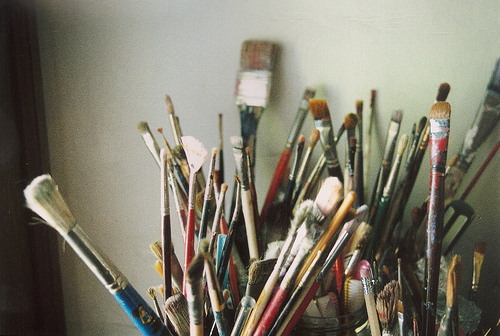

In my free time, I love to make things, usually in the art realm. While I am not trained or a professional, it's something I've loved to do since I was a kid.
Despite how cliche is sounds, I absolutely love traveling and experiencing new cultures. Only ask about my study abroad if you're prepared for me to gush about it endlessly.
When it comes to technology, I'm all about building clean, smart, and responsive interfaces. Ideally, I would love to work developing efficient software full-stack.